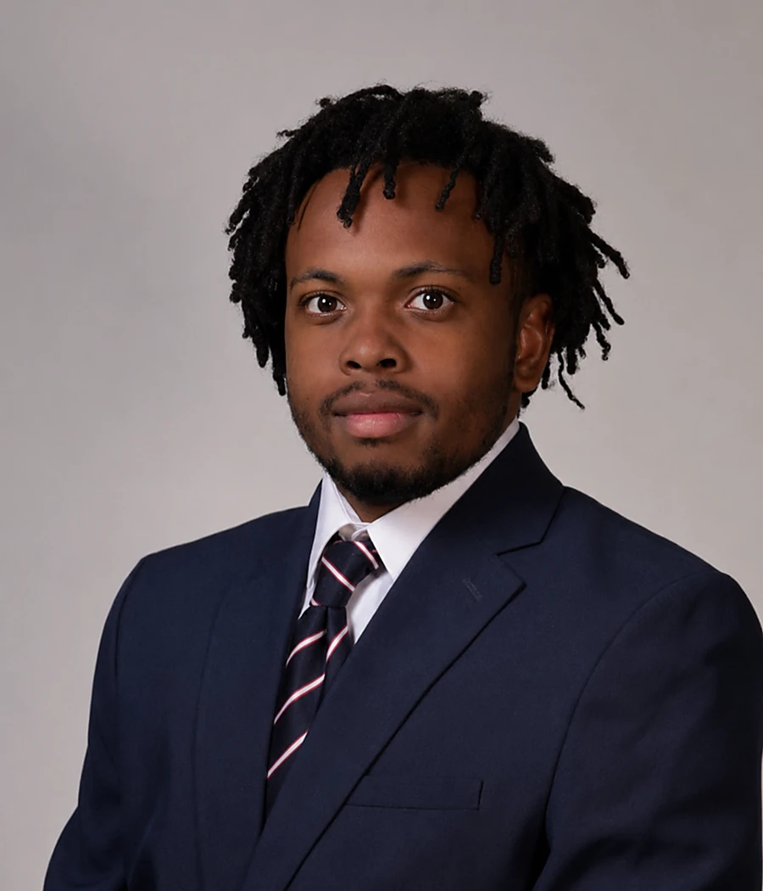
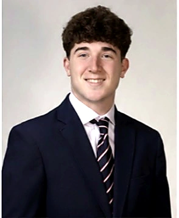
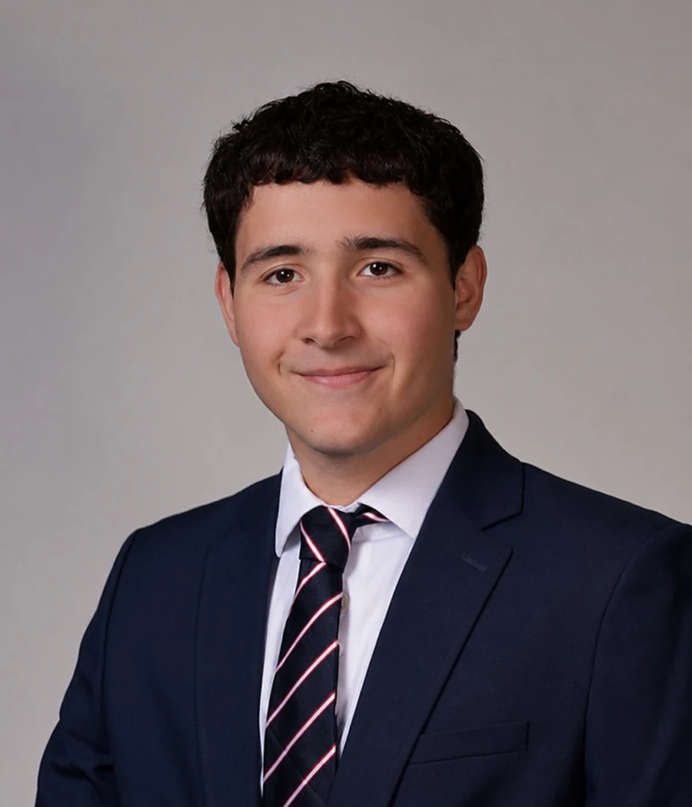
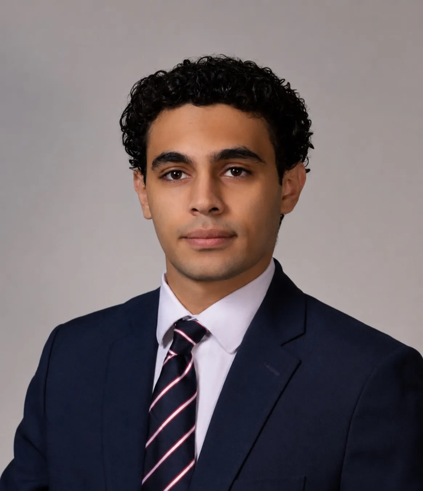
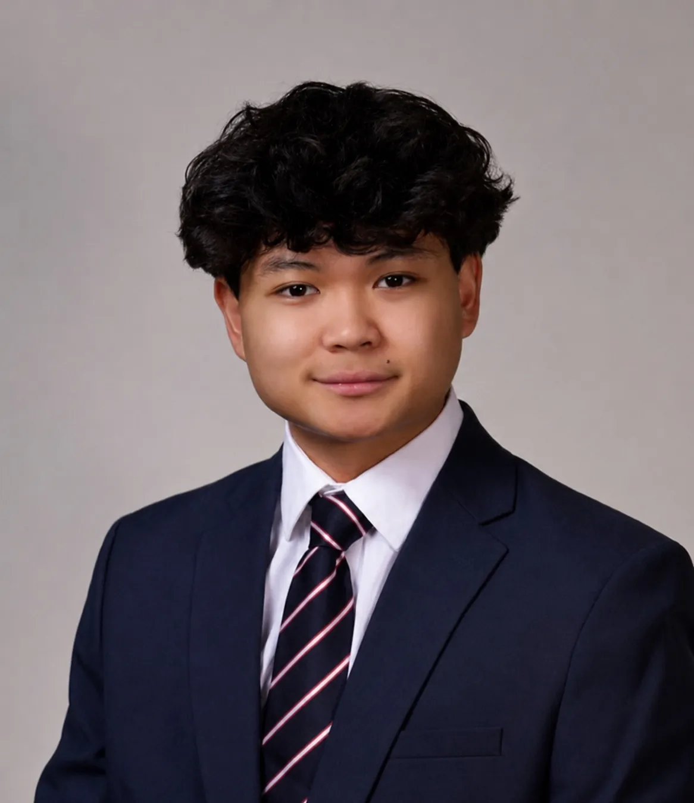
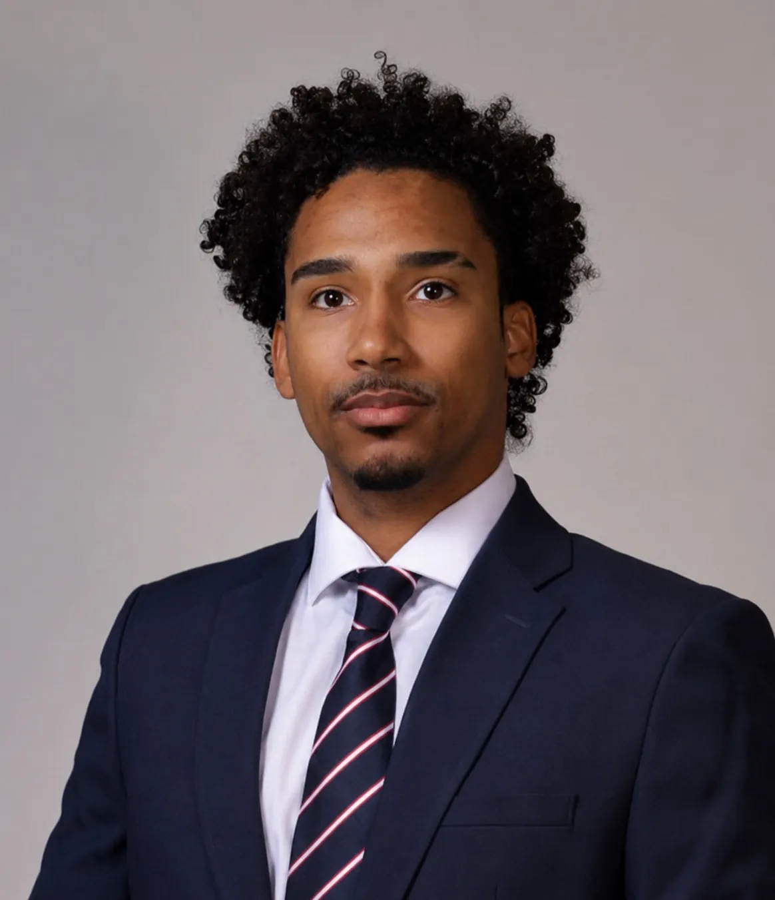
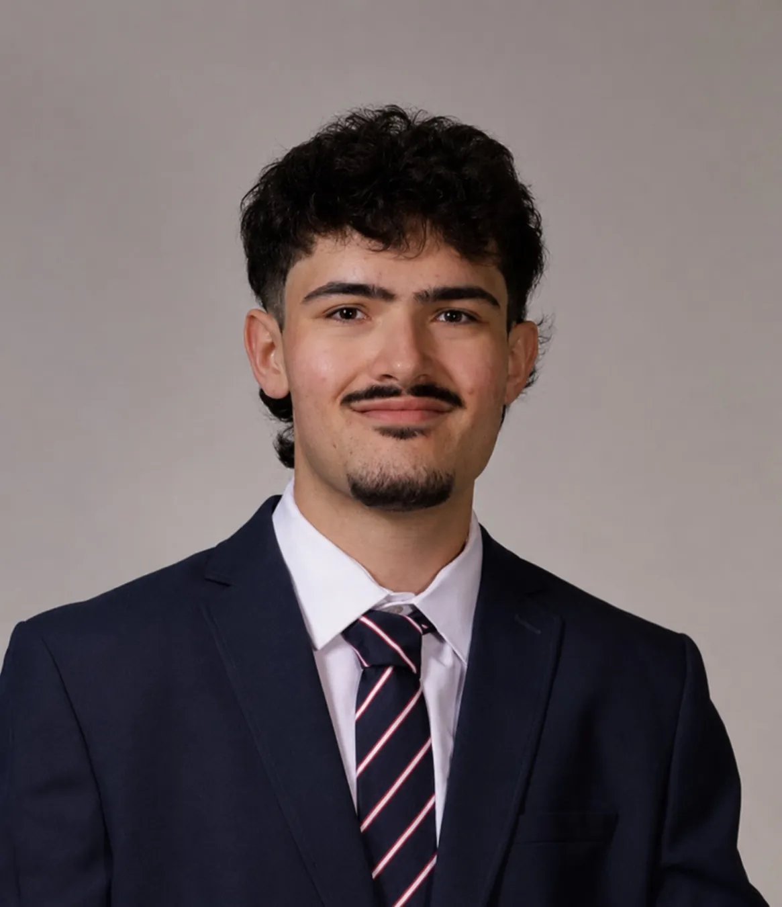
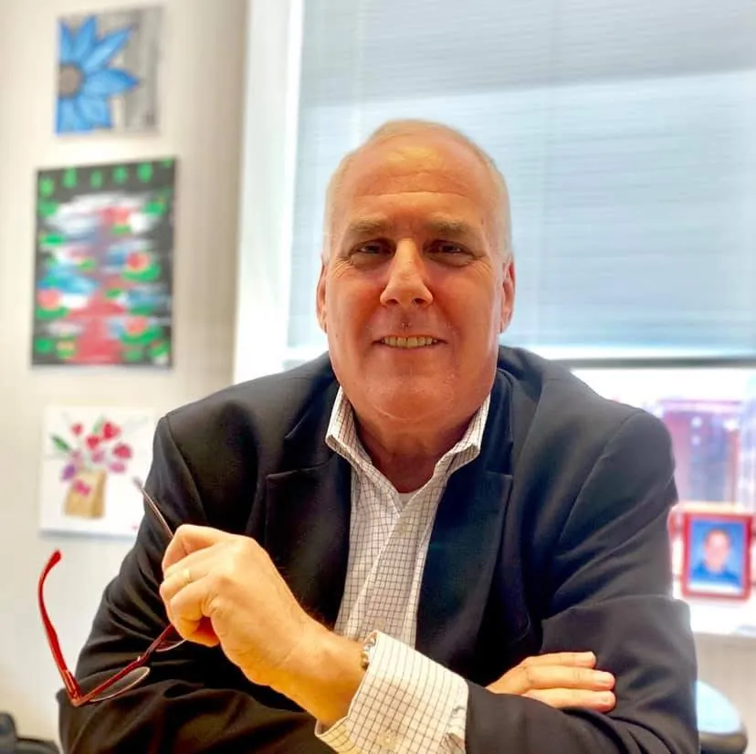
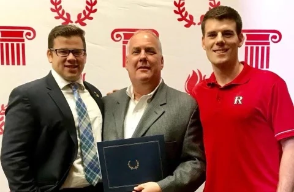
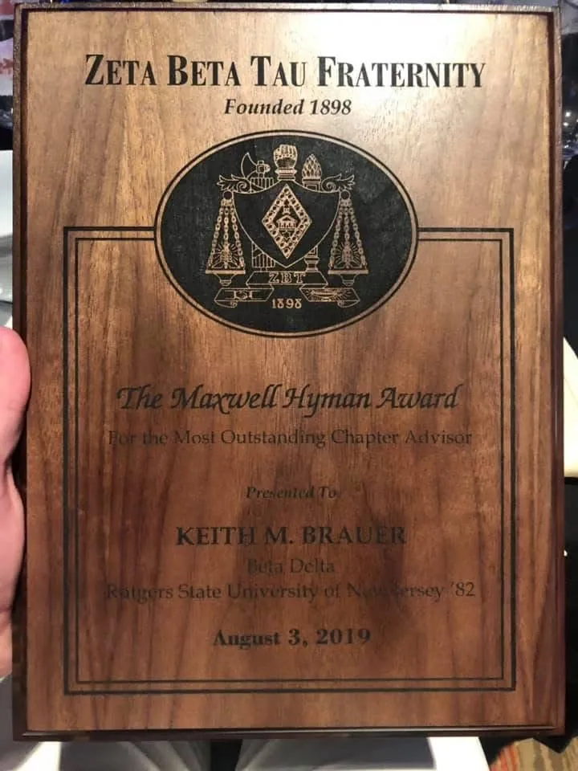

Vice President of Programming
Michael Brown
Manalapan, New Jersey
Michael coordinates the member programming that keeps the chapter engaged and works across officer teams to keep events organized.

The brothers responsible for chapter operations
Beta Delta’s officers and position holders manage housing, finances, recruitment, academics, events, communications, philanthropy and alumni relations.
President
Randolph, New Jersey
Michael first served as Risk Management Chair in Spring 2025, then took on housing responsibilities and became deeply involved in securing 106 College Avenue. Elected President in Fall 2025, he coordinates the Executive Board, represents the chapter and keeps long-term priorities moving.
Executive Board
Vice President of Programming
Manalapan, New Jersey
Michael coordinates the member programming that keeps the chapter engaged and works across officer teams to keep events organized.

Vice President of Communications
New York, New York
Ian oversees the website, social media, photography, public messaging and alumni communications while preserving the chapter’s accomplishments and history.
Vice President of Operations
Leonia, New Jersey
Ryan manages internal coordination, organizes responsibilities and helps turn Executive Board decisions into completed work.
Treasurer
South Brunswick, New Jersey
Aaron manages budgeting, collections and financial planning so chapter decisions remain responsible and sustainable.
Recruitment Team
Recruitment Director
Glen Ridge, New Jersey
Emmet plans recruitment events, follows up with prospective members and helps students understand the chapter honestly.

Recruitment Director
West Orange, New Jersey
Brandon works alongside Emmet to organize the recruitment process and identify students prepared to contribute.
Brotherhood & Housing
Brotherhood Development Directors plan events ranging from house bonfires to tailgates, while the Housing Manager helps oversee the daily care and use of 106 College Avenue.

Brotherhood Development Director
Woodstown, New Jersey
Sean plans brotherhood events ranging from house bonfires to tailgates, giving brothers more opportunities to spend meaningful time together.
Brotherhood Development Director & Housing Manager
Marlboro, New Jersey
Shane is serving his third term in Brotherhood Development after first taking the position in Fall 2025. He also serves as Housing Manager, coordinating the day-to-day care, organization and use of 106 College Avenue.
Chapter Leadership
These appointed leaders manage specific programs and give more brothers direct responsibility for Beta Delta’s success.

Social Chairman
Having previously served as a Social Chair, Abdel brings experience to chapter event planning and helps create the new social setup at 106 College Avenue.
Social Chairman
Zach brings previous Social Chair experience to planning chapter events and helping shape the new social setup at 106 College Avenue.
Social Chairman
With prior experience as a Social Chair, Nico works with Abdel and Zach to overhaul chapter events and create a functional new setup at 106 College Avenue.

Academic Chairman
Adrian helps brothers plan class schedules, connect with academic resources and remain accountable for their coursework.
Academic Chairman
Eric supports course planning and academic accountability so members remain on top of their work throughout the semester.
Sergeant-at-Arms
A senior and leader in the house, Matt helps uphold chapter standards and handles internal discipline.

Keller Chairman
Hahns runs Beta Delta’s Keller teams, coordinating participation in intramural sports between Rutgers IFC fraternities.
Alumni Chairman
Aidan plans alumni events and tailgates that bring generations of Beta Delta brothers back together.
Alumni Chairman
Evan works alongside Aidan on alumni outreach, events and football tailgates throughout the year.

Philanthropy Chairman
Hunter leads charitable initiatives, fundraising events and the chapter’s relationship with organizations including RU4Kids.

Chapter Advisor
Keith mentors officers, supports new member education and helps undergraduate leaders understand the chapter’s longer history. His relationships with alumni and ZBT International have been essential to the work surrounding 106 College Avenue.
Rutgers recognized Keith as Fraternity Advisor of the Year in 2018. In 2019, Zeta Beta Tau presented him with the Marwell Hyman Award for Most Outstanding Chapter Advisor, recognizing his dedication at both the university and national levels.
Explore the Hall of Fame →
Rutgers honored Keith for his guidance, service and commitment to Beta Delta.

Zeta Beta Tau’s award for the Most Outstanding Chapter Advisor.